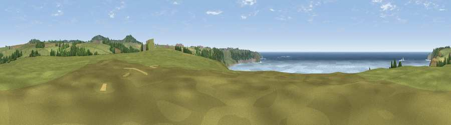

Viewpoint near Bosavern
#5526 in England · top 24% of its area beats it · near Bosavern · open accessWhere it is
The exact computed spot (SW 36012 28675). Click the marker for map links.
Public access: this spot lies on mapped open-access land (CRoW Act 2000) — you may roam here on foot. Computed from Natural England's CRoW access layer and OpenStreetMap rights of way — not the legal definitive map. Always verify locally.
The view, rendered

A 360° render of this exact spot computed from the terrain model, tree cover and land cover — summer colours, afternoon light, calibrated against photographs of famous viewpoints. Real trees, hedges and buildings will differ in detail.
The panorama
Grey silhouette: terrain skyline in each direction (720 bearings, Earth curvature and refraction included). Dashed green: skyline with trees (+15 m) and buildings (+8 m) as obstacles. Blue strip: how far the ground is visible on each bearing.
Where the view opens
Wedge length = distance to the farthest visible ground on that bearing (vegetation-aware). Rings at 10, 25 and 50 km.
What fills the view
45% water · 41% grassland · 8% woodland · 6% cropland ·
Angular shares of the visible panorama (visual magnitude), not map area. Landscape diversity 0.50 (0–1 Shannon).
Key numbers
More beautiful places nearby
The staircase of upgrades: each row has a higher view potential than everything closer. Driving times are estimates from straight-line distance, calibrated against real road routing — check an actual route before setting out.
| Place | Direction | Drive | Score |
|---|---|---|---|
| Viewpoint near Bosavern | ESE · 3 km | ~7 min | 82.4 |
| Viewpoint near Morvah | NE · 9 km | ~18 min | 83.2 |
| Viewpoint near Porthmeor | NE · 9 km | ~18 min | 84.8 |
| Rosewall Hill | NE · 16 km | ~29 min | 88.0 |
| Viewpoint near Combe Martin | NE · 171 km | ~193 min | 88.9 |
| Holdstone Hill | NE · 173 km | ~194 min | 90.2 |
| The Knoll | ENE · 225 km | ~240 min | 91.0 |
50.09937, -5.69283 · source: screening · position refined by local search. Computed location — check access rights before visiting.